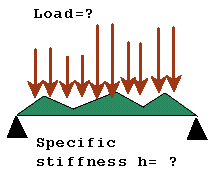
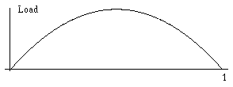

The presented form of publication
is not a joke or a charade-type game:
it imitates informal conversations between
colleagues when a letter envelope is used to
illustrate ideas and approaches. In mathematics, this style is proved to be very efficient and it seems to be consistent with Web
mainstream tone.
We decided to keep this informal style in
our Web discussion of the problem of
structural optimization we formulate below.
The standard mathematical text is placed in the Epilogue.
Andrej and Elena Cherkaev
Please send us your
comments
cherk@math.utah.edu
Structure versus uncertain loading: a game approach
by Andrej and Elena Cherkaev 
1. Introduction
The aim of design: The Structure stays against the Force
to maximize the stiffness.
| The situation is described as a game between two players. One player composes a structure, the second player chooses the loading. The players want to maximize and minimize the stiffness (equal to the stored in the structure energy). |
 |
 |
This is what could happen: | | The structure organizes itself to stay again the given load by enforcing resistivity in certain direction. As a result, the resistivity in other directions may become extremely weak and vulnerable to other loadings. This is the manifestation of the instability of optimal project designed against a single load.
|
 |
Depending of relative "strength" of both players,
there are two different situations.
2. Pure strategies
The best strategy for the force is to be applied in a certain way and the best strategy for the structure is to resist that force. All other admissible forces are less harmful and the defense against them is provided automatically.
Optimal design of a beam
|  |
The problem is to find the stiffness of the beam to minimize the elastic energy of a load.
The integral stiffness and the norm of the load are fixed, but the load itself is unknown. |
Solution:
( details are explained below, in the Epilogue)
|  |
 |
| The most dangerous load for a simple supported beam |
The optimal distribution of the stiffness in a simple supported beam |
Optimal design of a composite
made of two elastic materials
 |
The laminate composite offers the best resistance to a uniaxial stress and to any stress close to the uniaxial one. |
 |
The set of admissible additional loadings. If the magnitude of additional loading is small enough, the laminate design remains optimal. |
|
In these problems, it is possible to find a single most dangerous loading and to design a structure against it. |
Mathematically, the solution is called the saddle point solution or the solution in pure strategies. It is a fair compromise between the loads and the designs: any variation of the the solution by one of the players will be punished by the other player.
Limits of applicability of pure strategies
| The described strategy fails when the structure s1 designed against the load f1 shows less strength if the load f2 is applied, and vice versa: the structure s2 designed against the load f2 shows less strength if the load f1 is applied |
 |
3. Mixed strategies
There are games which require the consideration of several equally dangerous loadings.
Here the strategy is different: an optimal design offers equal resistance against a class of equally harmful loadings, rather then the extremal resistance to a single loading.
Examples of optimal design of a structure and of a wheel are placed below, in the Epilogue.
Optimal topology of a structure.
Optimal design of the topology is formulated as a problem of an optimal mixture
of the material with the void. The laminate structure is extremely unstable: it breaks apart if any loading but the uniaxial is applied.
| |
The set of admissible loadings |
 |
Optimal design is changed to reinforce all directions. |
 |
The responses to different loadings meet in the optimal structure. |
Optimal design of a wheel.
 |
The wheel is loaded by a concentrated force that is applied in a point of the rim of the wheel.
Note that the uncertainty of the position
of the applied load leads to axial symmetry of the design. |
|
Here, there is no single "most dangerous loading" : the design resists several loadings simultaneously, compromising the resistivity is several directions. |
Unlike the saddle point games, the solution of these games depends on the sequence of moves. The design must be decided prior to applying the force. Note that the inverse sequence of moves corresponds to quite different situation -- to the problem of the best best structure resisting a given load.
Mathematically, the solution is called the solution in mixed strategies. It equalizes the impact of several loading.
4. The mathematical formulation
To restrict a class of acting loads, we suppose that the integral over the loaded boundary of a positive quadratic form of them is fixed. Then,
the problem of the best force can be formulated as an eigenvalues problem of the first eigenfrequency of the vibrating structure with inertia elements concentrated on its loaded boundary. The problem typically is reduced to Steklov eigenvalue problem. The optimal applied load is the first eigenvector of that problem, and the stiffness is equal to the first (minimal) eigenvalue.
The optimization with respect to the structure requires maximization of the minimal eigenvalue.
The mixed strategies correspond to the multiplicity of the minimal eigenvalue.
Epilogue
The problem is discussed in our paper:
Optimal design for uncertain loading conditions In: Homogenization, V. Berdichevsky- ed., World Scientific,1998 (to appear)
Seen the movie -- read the paper.
The text of the paper 
Back to home(pages)
A related webside